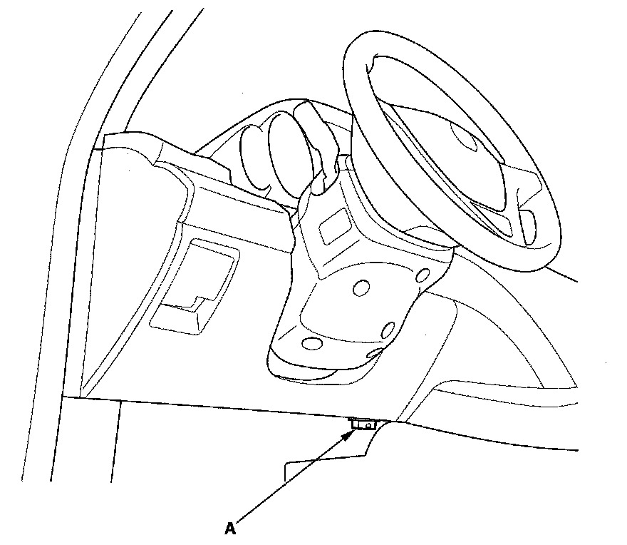

Reading and Clearing Diagnostic Trouble Codes
AcuraLinkGeneral Troubleshooting Information
How to Check for DTCs with the HDS
1. Make sure the ignition switch is OFF.

2. Connect the HDS to the data link connector (DLC) (A) located under the driver's side of the dashboard.
3. Turn the ignition switch ON (II).
4. Make sure the HDS communicates with the vehicle and the AcuraLink control unit (XM receiver). If it doesn't, troubleshoot the DLC circuit.
5. Select Telematics in the BODY ELECTRICAL menu.
6. Select DTCs in the Telematics menu.
7. Check for DTCs. If any DTCs are indicated, write down the DTCs, then go to the indicated DTC troubleshooting. If no DTCs are indicated, refer to symptom troubleshooting Symptom Troubleshooting Index.
NOTE: After troubleshooting, clear the DTCs with the HDS.